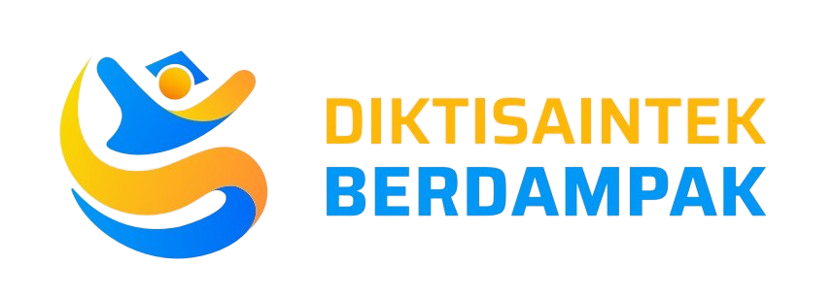

Panca Budi Al Amin Techno Park selalu berinovasi dan memberikan update terbaru mengenai kawasan inovasi, teknologi, dan pendidikan yang mendukung pengembangan masa depan.

Science Techno Park Al-Amin adalah pusat riset terapan, inovasi, dan kolaborasi antara akademisi, industri, dan masyarakat, sekaligus menjadi laboratorium terbuka bagi mahasiswa untuk praktik langsung.
Baca Selengkapnya
Kehadiran Bupati merupakan tindak lanjut koordinasi antara Camat Kutalimbaru dan pihak UNPAB terkait kerja sama pengembangan taman kecamatan serta budidaya hortikultura di kawasan Al-Amin Science Techno Park.
Baca Selengkapnya
Pemerintah Kabupaten Deli Serdang dan Universitas Pembangunan Panca Budi (UNPAB) menjalin kolaborasi strategis untuk mengembangkan Science Techno Park Al-Amin di Glugur Rimbun, Desa Sampe Cita, Deli Serdang.
Baca Selengkapnya